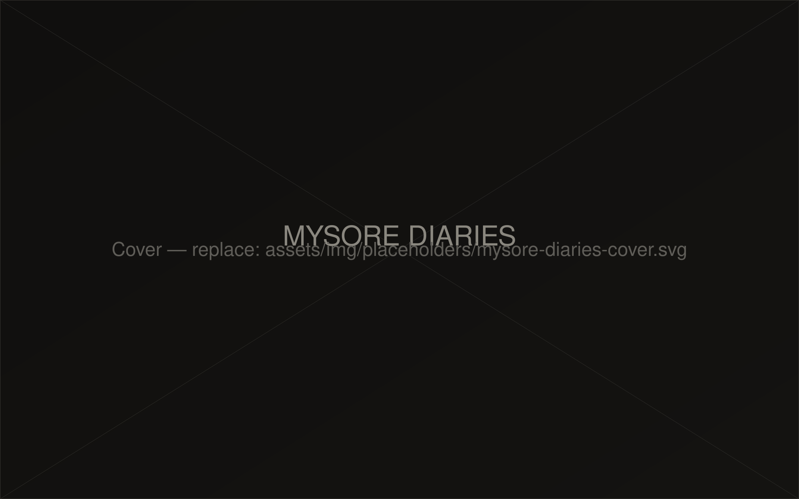

Project — Street
Mysore Diaries
[Project description — e.g. Street photography made walking through Mysuru's markets, temples and back lanes.]
8 photographs

Project — Street
[Project description — e.g. Street photography made walking through Mysuru's markets, temples and back lanes.]
8 photographs